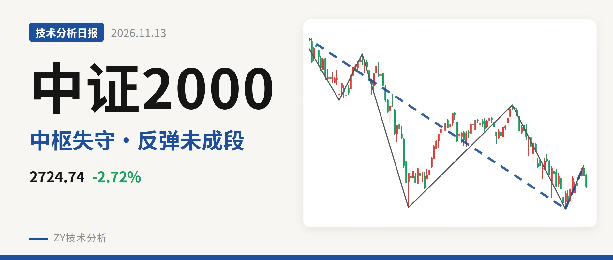
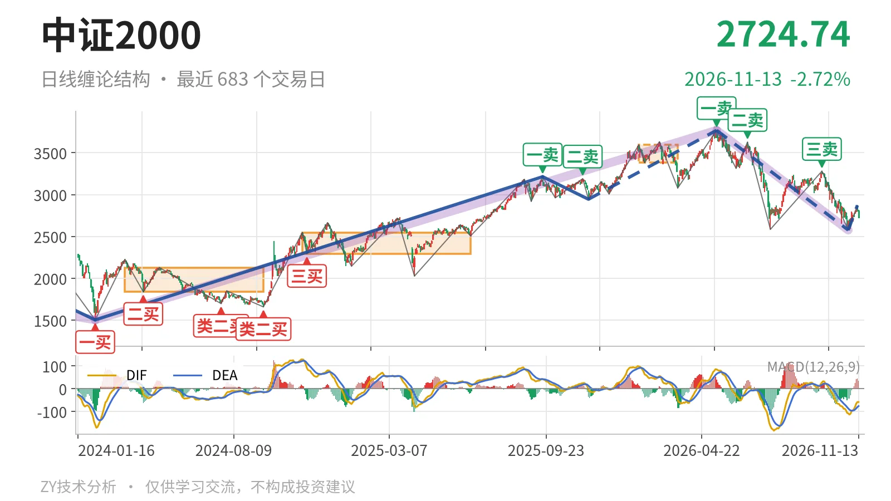
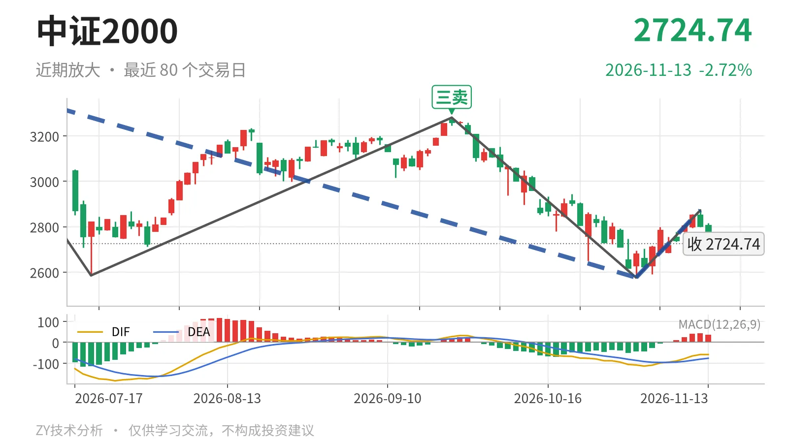

中证2000｜反抽未过2872，3381中枢失守

最近日线中枢 3381.36—3593.19点，收盘位于中枢之下
一句话：日线下跌段仍在延续，反弹未成线段，结构偏弱。
📉 走势结构：日线下跌段没有结束
当前仍处在5月14日以来的日线下跌线段里。11月2日至11月12日从 2576.02点 反弹至 2872.13点，日线结构上只有一笔，还未构成日线线段。11月13日单根K线最低2715.88点，仍高于2576.02点，这笔反弹没有被完全破坏，但也没有升级。更大级别看，2024年2月6日至2026年5月14日的上涨段未被重新站回，5月14日至11月2日的下跌段没有结束，当前仍归入后者。日线线段从3768.08点回落到2576.02点，跌约31.6%，不是日线中枢震荡，而是下跌段还在延续。

🧭 中枢与位置：高位中枢3381—3593点失守
11月13日收于 2724.74点，已经落在最近日线笔中枢 3381.36—3593.19点 下方，低于下沿约19.4%。该中枢是1月26日至3月23日形成的，中轴3487.28点。再往前看，2024年11月12日至2025年6月23日中枢中轴还在2420.51点，说明中枢先明显上移，如今价格跌回高位中枢下方。位置上已不是回踩中枢，而是跌破后反抽尚未回到区间，高位中枢有向下破坏迹象。
🔻 买卖点：卖点一个比一个低
日线笔级别上，5月14日一卖3768.08点、6月23日二卖3626.48点、9月22日三卖3280.29点，一个比一个低，反弹高点不断被压低，9月22日之后的反抽也没能重新回到3280.29点上方。线段级别上，2025年11月21日二三买2944.56点之后被2576.02点新低跌破，现在只对应更小级别的反弹结构。11月2日2576.02点只是暂定的线段类二买，因为所在的5月14日以来下跌线段还没有结束；后续若跌破2576点，该买点随线段延续而变化，不能当作已完成的结构低点。

⚖️ 背驰：最近反弹不新强
背驰只看最关键的同一方向。7月21日至9月22日上涨笔，红柱面积1511，DIF高点27.3；11月2日至11月12日上涨笔，红柱面积只有124，DIF高点为-58.5。后者高点2872.13点低于前高3280.29点，红柱面积和DIF高点都明显弱于前一轮，属于不新强。最新DIF仍停在-58.5，处于零轴之下，这波反弹没有把日线动能拉回零轴上方，更像下跌段中的弱反抽。
🚧 关键位置观察：反抽看2872与3381，回落看2576
整体结构偏弱，弱在反弹未成线段、DIF未上零轴、卖点一个比一个低、高位中枢下沿未回收。后续观察点：若反抽不能回到3381点上方，结构上仍受9月22日三卖压力压制，高位中枢向下破坏的倾向更强；重新站上2872点并延续成日线线段，才有条件去测试3280点附近；下方2576点若被跌破，11月2日暂定类二买被破坏，5月14日以来下跌段继续延伸。在重新站上3381点之前，仍按下跌段对待。
⚠️ 本文为基于公开行情数据的缠论技术结构记录，由程序自动计算并生成，仅供学习交流，不构成任何投资建议。市场有风险，投资需谨慎。